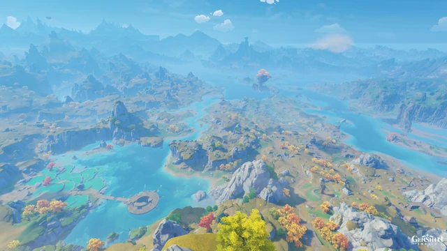

Liyue · Geography & Locations
Liyue: A Harbor of Contracts
Liyue is a nation in eastern Teyvat, known for its harbor, trade, and long connection to Morax.

The Ancient Jewel of the East
Perched along the southern coast of the continent, Liyue Harbor is the oldest continuously inhabited mortal city in Teyvat, boasting over 3,700 years of unbroken history. Blessed with deep natural harbors, rich mineral veins, and mountain valleys guarded by the Adepti, Liyue is the heart of continental commerce, maritime shipping, and artisan craftsmanship.
Everything in Liyue operates on the sacred principle of the 'Contract'—a cultural bedrock established by Morax (Rex Lapis), the God of Contracts and Geo Archon. To the people of Liyue, a signed contract is not merely legal paper; it is a spiritual vow that binds buyer and seller, ruler and citizen, god and mortal. Breaking a contract is considered the highest sacrilege, inviting the wrath of the rock.
The Adepti and the Pact of Mt. Tianheng
Liyue's survival through the bloody Archon War was guaranteed by Morax and the illuminated Adepti of Jueyun Karst—celestial beasts and immortal spirits such as Cloud Retainer, Mountain Shaper, Moon Carver, Streetward Rambler (Madame Ping), and the Yakshas. Thousands of years ago, Morax and the Adepti signed an eternal pact to protect Liyue Harbor from the wrath of ancient gods, sea monsters, and demons.
While mortals lived in the bustling docks below, the Adepti resided in solitude among the floating mist islands and soaring amber karst pillars of Jueyun Karst, stepping forward only when existential disasters threatened the realm. Among them, the Conqueror of Demons, Xiao, continues to fight alone in the shadows, bearing the agonizing weight of karmic debt to purge lingering demonic remnants from the earth.
From the Rule of Gods to the Age of Humanity
For nearly four millennia, Rex Lapis personally descended every year during the Rite of Descension to deliver prophecies that set the financial and agricultural course of the nation. However, following the orchestrated 'death' of Rex Lapis during the Rite of Descension and the climactic defeat of the ancient sea god Osial by the united forces of the Liyue Qixing, the Millelith, and the Adepti, Liyue underwent a historic metamorphosis.
Recognizing that humanity had matured enough to shoulder their own burdens, the Adepti formally ceded administrative and political authority to the mortal council of the Liyue Qixing under Ningguang and Keqing. The Golden House ceased to mint new Mora through divine power, marking the triumphant end of the divine contract and the dawn of an era where mortal trade, law, and perseverance shape the nation's future.
This is an original CoreGG reading guide, not an official HoYoverse article or a reproduction of the game text. Source links below identify the records used so you can check the original context.
Sources & references
Check these sources for the original game text and reference trail.